layout: true .toc.banner[ .sevinlogo[ ] .rosneft[ ] .tamura[ ] .shorttitle[ ] ] --- name: home class: metadata customtitle middle left giphy .toc.sidebar.left-column[ .outline[ # [О программе ](#H88047) # [Данные ](#Hb52bc) # [Результаты ](#H990ca) # [.pass[Обсуждение] ](#H434e6) # [Выводы ](#H4e831) ] ] .toc.mainbar.right-column.scrollable[ .authors[ .author[.speaker[Платонов Н. Г.], Иванов Е. А., Мордвинцев И. Н., Артемьева С. М., Найденко С. В.] .institute[Институт проблем экологии и эволюции им. А. Н. Северцова Российской академии наук, г. Москва] .author[Исаченко А. И., Лазарева Р. Е.] .institute[ООО «Арктический Научный Центр», г. Москва] ] .title[ Программа сохранения биоразнообразия «ТАМУРА» компании «Роснефть»:<br>Спутниковая биотелеметрия белых медведей Карского моря ] .subtitle[ ] .what[ ] .where[ ] .when[ .updated[Обновлено: 2025-10-24 19:11] ] ] --- name: H88047 .toc.sidebar.left-column[ .outline[ # [О программе ](#H88047).fg[].bg[] # [Данные ](#Hb52bc) # [Результаты ](#H990ca) # [.pass[Обсуждение] ](#H434e6) # [Выводы ](#H4e831) ] ] .toc.mainbar.right-column.scrollable[ .header.h1.broad[ <span class="generation">О программе</span> ] .fixprecode[ **Оценка численности и современного состояния белого медведя Карского моря:** + авиаучет животных по всей акватории Карского моря путем инструментальных и аэровизуальных наблюдений; + оценка встречаемости, распределения и половозрастного состава особей путем маршрутных вертолетных наблюдений в северо-западной части п-ова Таймыр в безледовый и ледовый периоды; + временное обездвиживание обнаруженных белых медведей и мечение спутниковыми передатчиками; + проведение морфометрических обмеров и отбор комплекса биологических проб для последующего анализа; + выявление закономерностей распределения и поведения белых медведей в безледовый и ледовый периоды, оценка физического состояния особей и их пищевых предпочтений; + токсикологические, серологические, биохимические и молекулярно-генетические исследования. ] ] --- name: Hb52bc .toc.sidebar.left-column[ .outline[ # [О программе ](#H88047) # [Данные ](#Hb52bc).fg[].bg[] ## [Передатчики ](#H41cf8) ## [.pass[Отловы] ](#H4b889) ## [Локации ](#H55fc9) # [Результаты ](#H990ca) # [.pass[Обсуждение] ](#H434e6) # [Выводы ](#H4e831) ] ] .toc.mainbar.right-column.scrollable[ .header.h1.broad[ <span class="generation">Данные</span> ] .fixprecode[ .double[ ## Отловы Экспедиционные работы, обездвиживание с вертолёта: + 2024 г., безлёдный период, август-сентябрь. + 2025 г., ледовый период, апрель-май. ## Глубины и высоты Глобальная модель рельефа <span class="cite hovertext" data-hover="The GEBCO_2025 Grid - a continuous terrain model for oceans and land at 15 arc-second intervals"><a name=cite-GEBCO_2025></a>([GEBCO Bathymetric Compilation Group, 2025](#bib))</span>. + Преобразование в сетку с ячейкой 500 м. ## Береговая линия Упрощенные полигоны суши <span class="cite hovertext" data-hover="Data Derived from OpenStreetMap for Download"><a name=cite-OpenStreetMapData></a>([Topf and Hormann, 2025](#bib))</span>. + Преобразование к сегментам длиной до 10 м. ## Морской лёд Ледовые карты маргинальных зон (лёд умеренной сплоченности CT18, сплоченный лёд CT81) <span class="cite hovertext" data-hover="Daily Arctic Marginal Ice Zone (MIZ) and Overlay Shapefile"><a name=cite-USNIC_MIZ></a>([US NIC, 2022](#bib))</span>. + Растеризация в сетку с ячейкой 2 км. + Восстановление полей открытой воды CT01. ] ] ] --- name: H41cf8 .toc.sidebar.left-column[ .outline[ # [О программе ](#H88047) # [Данные ](#Hb52bc).fg[] ## [Передатчики ](#H41cf8).fg[].bg[] ## [.pass[Отловы] ](#H4b889) ## [Локации ](#H55fc9) # [Результаты ](#H990ca) # [.pass[Обсуждение] ](#H434e6) # [Выводы ](#H4e831) ] ] .toc.mainbar.right-column.scrollable[ .header.h2.broad[ <span class="generation">Передатчики</span> .parent[.grand[Данные]] ] .fixprecode[ .pulling[ .pull-left-40[ ### Ошейники <img src="assets/Polar Bear Collar.jpg" width="1330" height="700" style="display: block; margin: auto auto auto 0;" /> ] .pull-right-60[ ### Ушные метки .double[ <img src="assets/Ушная метка №1.jpg" width="1330" height="700" style="display: block; margin: auto auto auto 0;" /> <img src="assets/Ушная метка №2.jpg" width="1330" height="700" style="display: block; margin: auto auto auto 0;" /> ] ] ] ] ] --- name: H4b889 .toc.sidebar.left-column[ .outline[ # [О программе ](#H88047) # [Данные ](#Hb52bc).fg[] ## [Передатчики ](#H41cf8) ## [.pass[Отловы] ](#H4b889).fg[] ### [2024 г.](#H4b889).fg[].bg[] ### [2025 г.](#Hc41d7) ## [Локации ](#H55fc9) # [Результаты ](#H990ca) # [.pass[Обсуждение] ](#H434e6) # [Выводы ](#H4e831) ] ] .toc.mainbar.right-column.scrollable[ .header.h3.broad[ <span class='generation'>Отловы 2024 г.</span> .parent[.grand[.pass[Отловы] .grand[Данные]]] ] .fixprecode[ 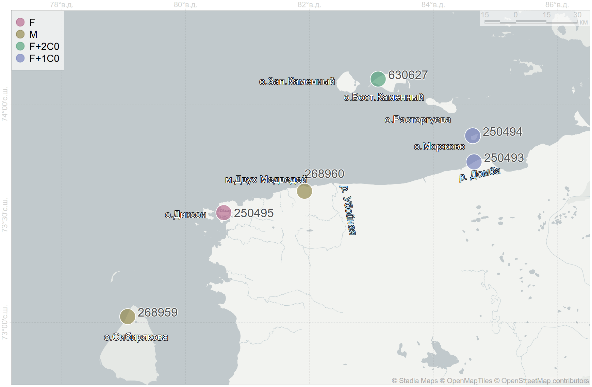 ] ] --- name: Hc41d7 .toc.sidebar.left-column[ .outline[ # [О программе ](#H88047) # [Данные ](#Hb52bc).fg[] ## [Передатчики ](#H41cf8) ## [.pass[Отловы] ](#H4b889).fg[] ### [2024 г.](#H4b889) ### [2025 г.](#Hc41d7) <span class="bullet bullet-active">[•](#Hc41d7)</span><span class="bullet mslide10m">[•](#Hc9837)</span><span class="bullet mslide11m">[•](#Hbe844)</span>.fg[].bg[] ## [Локации ](#H55fc9) # [Результаты ](#H990ca) # [.pass[Обсуждение] ](#H434e6) # [Выводы ](#H4e831) ] ] .toc.mainbar.right-column.scrollable[ .header.h3.broad[ <span class='generation'>Отловы 2025 г.</span> .parent[.grand[.pass[Отловы] .grand[Данные]]] ] .fixprecode[ 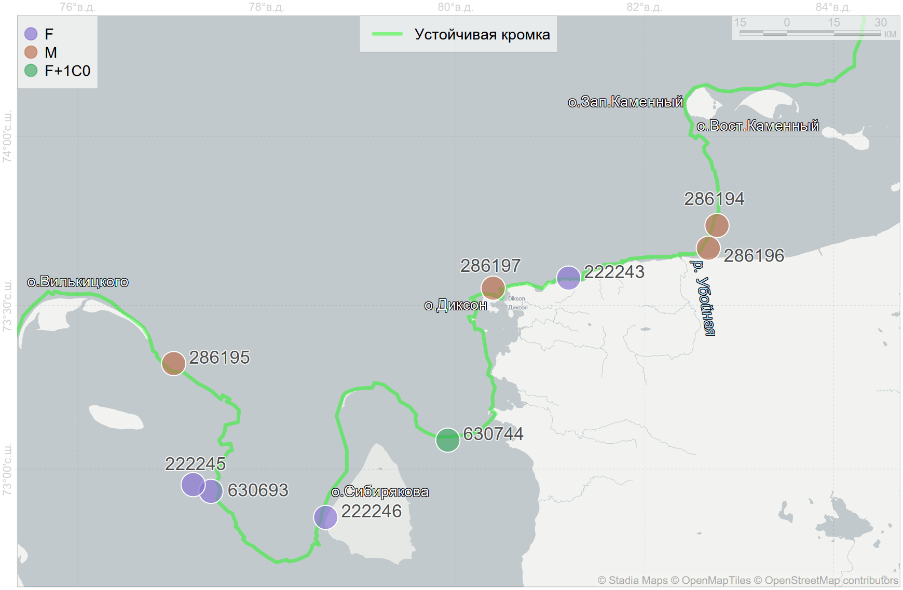 ] ] --- name: Hc9837 .toc.sidebar.left-column[ .outline[ # [О программе ](#H88047) # [Данные ](#Hb52bc).fg[] ## [Передатчики ](#H41cf8) ## [.pass[Отловы] ](#H4b889).fg[] ### [2024 г.](#H4b889) ### [2025 г.](#Hc41d7) <span class="bullet bullet">[•](#Hc41d7)</span><span class="bullet bullet-active">[•](#Hc9837)</span><span class="bullet mslide11m">[•](#Hbe844)</span>.fg[].bg[] ## [Локации ](#H55fc9) # [Результаты ](#H990ca) # [.pass[Обсуждение] ](#H434e6) # [Выводы ](#H4e831) ] ] .toc.mainbar.right-column.scrollable[ .header.h3.broad[ <span class='generation'>Отловы 2025 г.</span> .parent[.grand[.pass[Отловы] .grand[Данные]]] ] .fixprecode[ 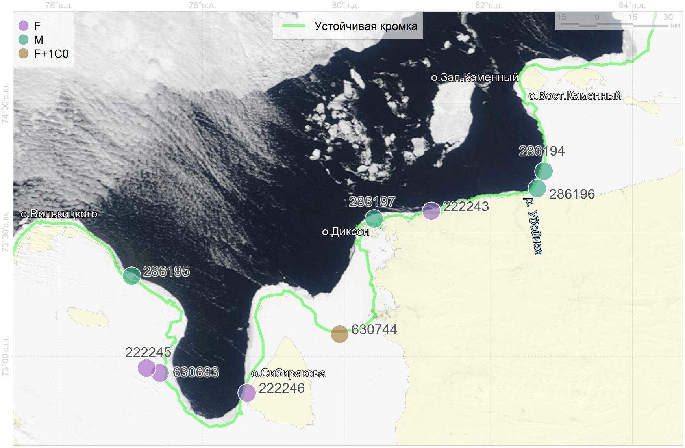 ] ] --- name: Hbe844 .toc.sidebar.left-column[ .outline[ # [О программе ](#H88047) # [Данные ](#Hb52bc).fg[] ## [Передатчики ](#H41cf8) ## [.pass[Отловы] ](#H4b889).fg[] ### [2024 г.](#H4b889) ### [2025 г.](#Hc41d7) <span class="bullet bullet">[•](#Hc41d7)</span><span class="bullet bullet">[•](#Hc9837)</span><span class="bullet bullet-active">[•](#Hbe844)</span>.fg[].bg[] ## [Локации ](#H55fc9) # [Результаты ](#H990ca) # [.pass[Обсуждение] ](#H434e6) # [Выводы ](#H4e831) ] ] .toc.mainbar.right-column.scrollable[ .header.h3.broad[ <span class='generation'>Отловы 2025 г.</span> .parent[.grand[.pass[Отловы] .grand[Данные]]] ] .fixprecode[ 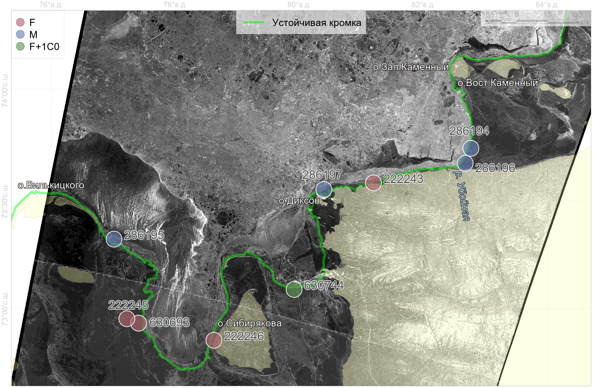 ] ] --- name: H55fc9 .toc.sidebar.left-column[ .outline[ # [О программе ](#H88047) # [Данные ](#Hb52bc).fg[] ## [Передатчики ](#H41cf8) ## [.pass[Отловы] ](#H4b889) ## [Локации ](#H55fc9).fg[].bg[] ### [Частота](#H7106f) ### [Точность](#Ha9cac) # [Результаты ](#H990ca) # [.pass[Обсуждение] ](#H434e6) # [Выводы ](#H4e831) ] ] .toc.mainbar.right-column.scrollable[ .header.h2.broad[ <span class="generation">Локации</span> .parent[.grand[Данные]] ] .fixprecode[ .pulling[ .pull-left-70[ #### Построение траектории + Фильтрация локаций по порогу скорости смещения <span class="cite hovertext" data-hover="A simple new algorithm to filter marine mammal Argos locations"><a name=cite-Argos-filter></a>([Freitas et al., 2008](#bib))</span>. + Исключение локаций вручную и повторение фильтрации + На 24 октября 2025 г. для одной особи одна локация в море Лаптевых + Модель простого случайного блуждания <span class="cite hovertext" data-hover="Movement responses to environment: fast inference of variation among southern elephant seals with a mixed effects model"><a name=cite-Jonsen2019></a>([Jonsen et al., 2019](#bib))</span>, <span class="cite hovertext" data-hover="A continuous-time state-space model for rapid quality-control of Argos locations from animal-borne tags"><a name=cite-Jonsen2020></a>([Jonsen et al., 2020](#bib))</span> для построения ежесуточных локаций на 12:00 <abbr title="единое скоординированное время, единое время">UTC</abbr> #### Оценка среднесуточного смещения + Фильтрация локаций по площади эллипса ошибки, прямолинейности перемещения и величине смещения. ] .pull-right-30[ 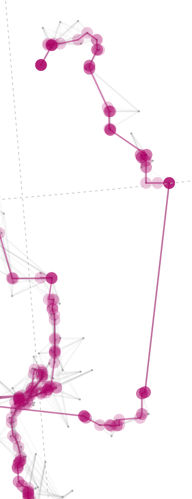 ] ] ] ] --- name: H7106f .toc.sidebar.left-column[ .outline[ # [О программе ](#H88047) # [Данные ](#Hb52bc).fg[] ## [Передатчики ](#H41cf8) ## [.pass[Отловы] ](#H4b889) ## [Локации ](#H55fc9).fg[] ### [Частота](#H7106f) <span class="bullet bullet-active">[•](#H7106f)</span><span class="bullet mslide14m">[•](#Hceeeb)</span><span class="bullet mslide15m">[•](#Hb9e98)</span>.fg[].bg[] ### [Точность](#Ha9cac) # [Результаты ](#H990ca) # [.pass[Обсуждение] ](#H434e6) # [Выводы ](#H4e831) ] ] .toc.mainbar.right-column.scrollable[ .header.h3.broad[ <span class='generation'>Частота локаций</span> .parent[.grand[Локации .grand[Данные]]] ] .fixprecode[ <div class="figure" style="text-align: left"> 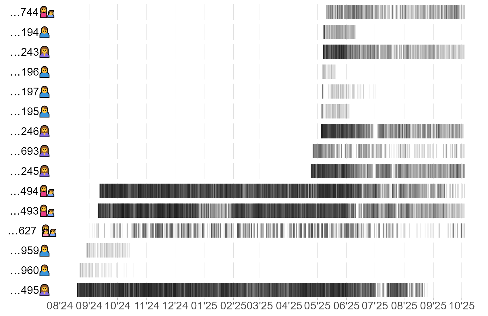 <p class="caption">Частота исходных локаций</p> </div> ] ] --- name: Hceeeb .toc.sidebar.left-column[ .outline[ # [О программе ](#H88047) # [Данные ](#Hb52bc).fg[] ## [Передатчики ](#H41cf8) ## [.pass[Отловы] ](#H4b889) ## [Локации ](#H55fc9).fg[] ### [Частота](#H7106f) <span class="bullet bullet">[•](#H7106f)</span><span class="bullet bullet-active">[•](#Hceeeb)</span><span class="bullet mslide15m">[•](#Hb9e98)</span>.fg[].bg[] ### [Точность](#Ha9cac) # [Результаты ](#H990ca) # [.pass[Обсуждение] ](#H434e6) # [Выводы ](#H4e831) ] ] .toc.mainbar.right-column.scrollable[ .header.h3.broad[ <span class='generation'>Частота локаций</span> .parent[.grand[Локации .grand[Данные]]] ] .fixprecode[ <div class="figure" style="text-align: left"> 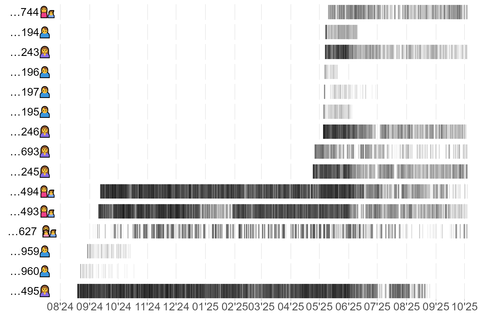 <p class="caption">Частота локаций после фильтрации</p> </div> ] ] --- name: Hb9e98 .toc.sidebar.left-column[ .outline[ # [О программе ](#H88047) # [Данные ](#Hb52bc).fg[] ## [Передатчики ](#H41cf8) ## [.pass[Отловы] ](#H4b889) ## [Локации ](#H55fc9).fg[] ### [Частота](#H7106f) <span class="bullet bullet">[•](#H7106f)</span><span class="bullet bullet">[•](#Hceeeb)</span><span class="bullet bullet-active">[•](#Hb9e98)</span>.fg[].bg[] ### [Точность](#Ha9cac) # [Результаты ](#H990ca) # [.pass[Обсуждение] ](#H434e6) # [Выводы ](#H4e831) ] ] .toc.mainbar.right-column.scrollable[ .header.h3.broad[ <span class='generation'>Частота локаций</span> .parent[.grand[Локации .grand[Данные]]] ] .fixprecode[ <div class="figure" style="text-align: left"> <img src="assets/locfrequency-hr.png" alt="Обратная ошибка точности ежесуточных локаций" width="1330" height="700" /> <p class="caption">Обратная ошибка точности ежесуточных локаций</p> </div> ] ] --- name: Ha9cac .toc.sidebar.left-column[ .outline[ # [О программе ](#H88047) # [Данные ](#Hb52bc).fg[] ## [Передатчики ](#H41cf8) ## [.pass[Отловы] ](#H4b889) ## [Локации ](#H55fc9).fg[] ### [Частота](#H7106f) ### [Точность](#Ha9cac) <span class="bullet bullet-active">[•](#Ha9cac)</span><span class="bullet mslide17m">[•](#H57e7e)</span>.fg[].bg[] # [Результаты ](#H990ca) # [.pass[Обсуждение] ](#H434e6) # [Выводы ](#H4e831) ] ] .toc.mainbar.right-column.scrollable[ .header.h3.broad[ <span class='generation'>Точность локаций</span> .parent[.grand[Локации .grand[Данные]]] ] .fixprecode[ <div class="figure" style="text-align: left"> 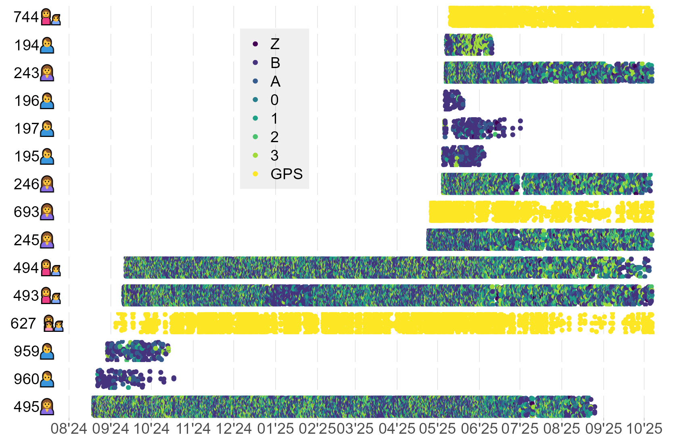 <p class="caption">Точность исходных локаций</p> </div> ] ] --- name: H57e7e .toc.sidebar.left-column[ .outline[ # [О программе ](#H88047) # [Данные ](#Hb52bc).fg[] ## [Передатчики ](#H41cf8) ## [.pass[Отловы] ](#H4b889) ## [Локации ](#H55fc9).fg[] ### [Частота](#H7106f) ### [Точность](#Ha9cac) <span class="bullet bullet">[•](#Ha9cac)</span><span class="bullet bullet-active">[•](#H57e7e)</span>.fg[].bg[] # [Результаты ](#H990ca) # [.pass[Обсуждение] ](#H434e6) # [Выводы ](#H4e831) ] ] .toc.mainbar.right-column.scrollable[ .header.h3.broad[ <span class='generation'>Точность локаций</span> .parent[.grand[Локации .grand[Данные]]] ] .fixprecode[ <div class="figure" style="text-align: left"> 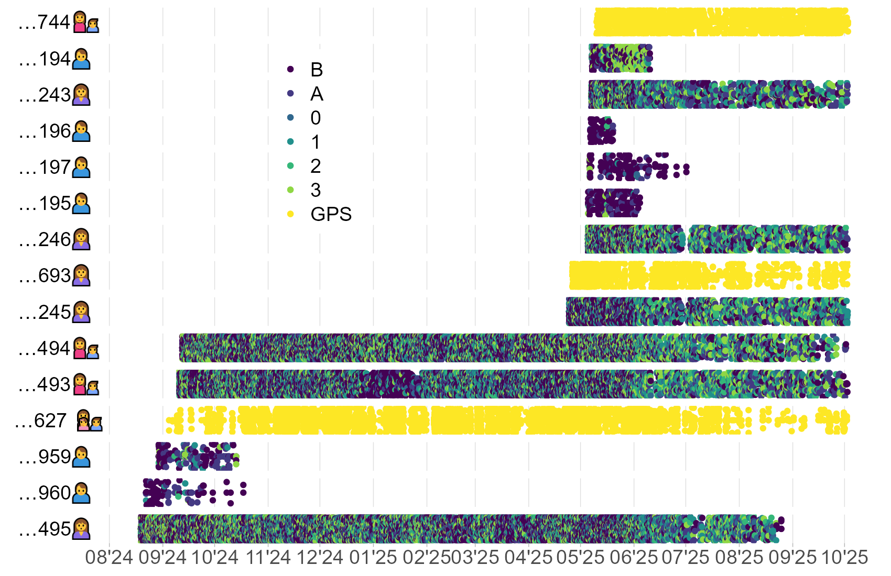 <p class="caption">Точность локаций после фильтрации</p> </div> ] ] --- name: H990ca .toc.sidebar.left-column[ .outline[ # [О программе ](#H88047) # [Данные ](#Hb52bc) # [Результаты ](#H990ca) <span class="bullet bullet-active">[•](#H990ca)</span><span class="bullet mslide19m">[•](#Hb05fc)</span><span class="bullet mslide20m">[•](#He2ae2)</span><span class="bullet mslide21m">[•](#H95a91)</span><span class="bullet mslide22m">[•](#H0ca04)</span><span class="bullet mslide23m">[•](#H7ba77)</span><span class="bullet mslide24m">[•](#He5c3e)</span><span class="bullet mslide25m">[•](#H92c4d)</span><span class="bullet mslide26m">[•](#H0bcd8)</span><span class="bullet mslide27m">[•](#H7ccab)</span><span class="bullet mslide28m">[•](#Hec75a)</span><span class="bullet mslide29m">[•](#H9b729)</span><span class="bullet mslide30m">[•](#Hfbb51)</span><span class="bullet mslide31m">[•](#H8cb22)</span><span class="bullet mslide32m">[•](#H15bb7)</span>.fg[].bg[] ## [Суточный ход ](#H4e4c7) ## [.pass[Морской лёд] ](#H754f2) # [.pass[Обсуждение] ](#H434e6) # [Выводы ](#H4e831) ] ] .toc.mainbar.right-column.scrollable[ .header.h1.broad[ <span class="generation">Результаты</span> ] .fixprecode[ <div class="figure" style="text-align: left"> 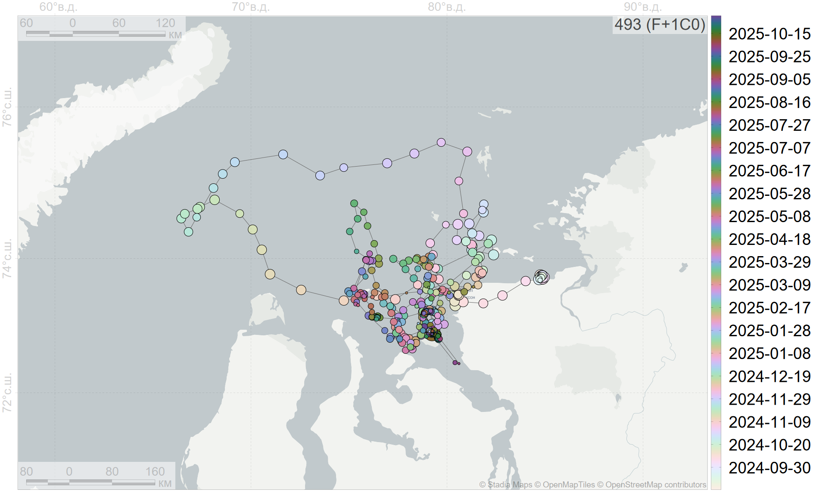Размер маркера обратнопропорционален логарифму ошибки координат</span>" width="1330" height="700" /> <p class="caption">Перемещение 493👩👦. <span class='smallest'>Размер маркера обратнопропорционален логарифму ошибки координат</span></p> </div> ] ] --- name: Hb05fc .toc.sidebar.left-column[ .outline[ # [О программе ](#H88047) # [Данные ](#Hb52bc) # [Результаты ](#H990ca) <span class="bullet bullet">[•](#H990ca)</span><span class="bullet bullet-active">[•](#Hb05fc)</span><span class="bullet mslide20m">[•](#He2ae2)</span><span class="bullet mslide21m">[•](#H95a91)</span><span class="bullet mslide22m">[•](#H0ca04)</span><span class="bullet mslide23m">[•](#H7ba77)</span><span class="bullet mslide24m">[•](#He5c3e)</span><span class="bullet mslide25m">[•](#H92c4d)</span><span class="bullet mslide26m">[•](#H0bcd8)</span><span class="bullet mslide27m">[•](#H7ccab)</span><span class="bullet mslide28m">[•](#Hec75a)</span><span class="bullet mslide29m">[•](#H9b729)</span><span class="bullet mslide30m">[•](#Hfbb51)</span><span class="bullet mslide31m">[•](#H8cb22)</span><span class="bullet mslide32m">[•](#H15bb7)</span>.fg[].bg[] ## [Суточный ход ](#H4e4c7) ## [.pass[Морской лёд] ](#H754f2) # [.pass[Обсуждение] ](#H434e6) # [Выводы ](#H4e831) ] ] .toc.mainbar.right-column.scrollable[ .header.h1.broad[ <span class="generation">Результаты</span> ] .fixprecode[ <div class="figure" style="text-align: left"> 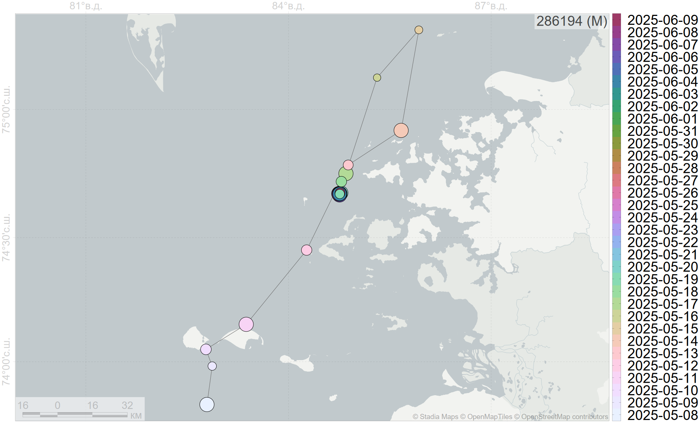Размер маркера обратнопропорционален логарифму ошибки координат</span>" width="1330" height="700" /> <p class="caption">Перемещение 194🙍♂️. <span class='smallest'>Размер маркера обратнопропорционален логарифму ошибки координат</span></p> </div> ] ] --- name: He2ae2 .toc.sidebar.left-column[ .outline[ # [О программе ](#H88047) # [Данные ](#Hb52bc) # [Результаты ](#H990ca) <span class="bullet bullet">[•](#H990ca)</span><span class="bullet bullet">[•](#Hb05fc)</span><span class="bullet bullet-active">[•](#He2ae2)</span><span class="bullet mslide21m">[•](#H95a91)</span><span class="bullet mslide22m">[•](#H0ca04)</span><span class="bullet mslide23m">[•](#H7ba77)</span><span class="bullet mslide24m">[•](#He5c3e)</span><span class="bullet mslide25m">[•](#H92c4d)</span><span class="bullet mslide26m">[•](#H0bcd8)</span><span class="bullet mslide27m">[•](#H7ccab)</span><span class="bullet mslide28m">[•](#Hec75a)</span><span class="bullet mslide29m">[•](#H9b729)</span><span class="bullet mslide30m">[•](#Hfbb51)</span><span class="bullet mslide31m">[•](#H8cb22)</span><span class="bullet mslide32m">[•](#H15bb7)</span>.fg[].bg[] ## [Суточный ход ](#H4e4c7) ## [.pass[Морской лёд] ](#H754f2) # [.pass[Обсуждение] ](#H434e6) # [Выводы ](#H4e831) ] ] .toc.mainbar.right-column.scrollable[ .header.h1.broad[ <span class="generation">Результаты</span> ] .fixprecode[ <div class="figure" style="text-align: left"> 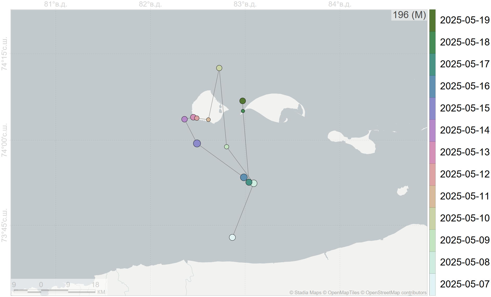Размер маркера обратнопропорционален логарифму ошибки координат</span>" width="1330" height="700" /> <p class="caption">Перемещение 196🙍♂️. <span class='smallest'>Размер маркера обратнопропорционален логарифму ошибки координат</span></p> </div> ] ] --- name: H95a91 .toc.sidebar.left-column[ .outline[ # [О программе ](#H88047) # [Данные ](#Hb52bc) # [Результаты ](#H990ca) <span class="bullet bullet">[•](#H990ca)</span><span class="bullet bullet">[•](#Hb05fc)</span><span class="bullet bullet">[•](#He2ae2)</span><span class="bullet bullet-active">[•](#H95a91)</span><span class="bullet mslide22m">[•](#H0ca04)</span><span class="bullet mslide23m">[•](#H7ba77)</span><span class="bullet mslide24m">[•](#He5c3e)</span><span class="bullet mslide25m">[•](#H92c4d)</span><span class="bullet mslide26m">[•](#H0bcd8)</span><span class="bullet mslide27m">[•](#H7ccab)</span><span class="bullet mslide28m">[•](#Hec75a)</span><span class="bullet mslide29m">[•](#H9b729)</span><span class="bullet mslide30m">[•](#Hfbb51)</span><span class="bullet mslide31m">[•](#H8cb22)</span><span class="bullet mslide32m">[•](#H15bb7)</span>.fg[].bg[] ## [Суточный ход ](#H4e4c7) ## [.pass[Морской лёд] ](#H754f2) # [.pass[Обсуждение] ](#H434e6) # [Выводы ](#H4e831) ] ] .toc.mainbar.right-column.scrollable[ .header.h1.broad[ <span class="generation">Результаты</span> ] .fixprecode[ <div class="figure" style="text-align: left"> 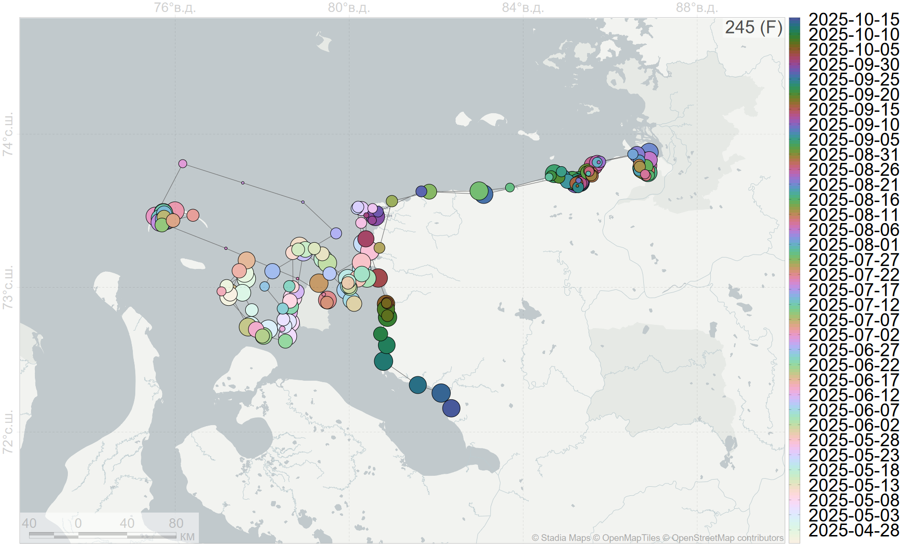Размер маркера обратнопропорционален логарифму ошибки координат</span>" width="1330" height="700" /> <p class="caption">Перемещение 245🙎. <span class='smallest'>Размер маркера обратнопропорционален логарифму ошибки координат</span></p> </div> ] ] --- name: H0ca04 .toc.sidebar.left-column[ .outline[ # [О программе ](#H88047) # [Данные ](#Hb52bc) # [Результаты ](#H990ca) <span class="bullet bullet">[•](#H990ca)</span><span class="bullet bullet">[•](#Hb05fc)</span><span class="bullet bullet">[•](#He2ae2)</span><span class="bullet bullet">[•](#H95a91)</span><span class="bullet bullet-active">[•](#H0ca04)</span><span class="bullet mslide23m">[•](#H7ba77)</span><span class="bullet mslide24m">[•](#He5c3e)</span><span class="bullet mslide25m">[•](#H92c4d)</span><span class="bullet mslide26m">[•](#H0bcd8)</span><span class="bullet mslide27m">[•](#H7ccab)</span><span class="bullet mslide28m">[•](#Hec75a)</span><span class="bullet mslide29m">[•](#H9b729)</span><span class="bullet mslide30m">[•](#Hfbb51)</span><span class="bullet mslide31m">[•](#H8cb22)</span><span class="bullet mslide32m">[•](#H15bb7)</span>.fg[].bg[] ## [Суточный ход ](#H4e4c7) ## [.pass[Морской лёд] ](#H754f2) # [.pass[Обсуждение] ](#H434e6) # [Выводы ](#H4e831) ] ] .toc.mainbar.right-column.scrollable[ .header.h1.broad[ <span class="generation">Результаты</span> ] .fixprecode[ <div class="figure" style="text-align: left"> 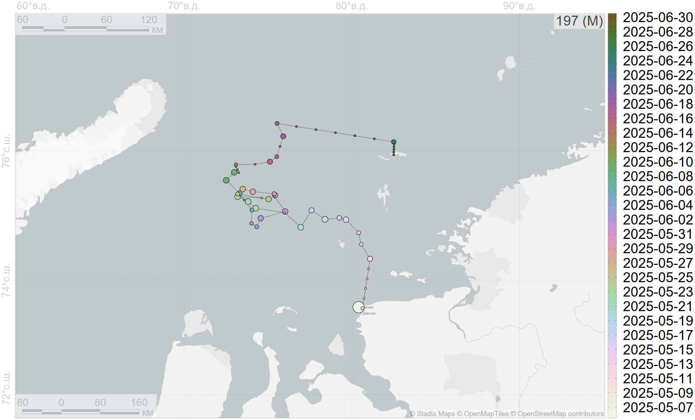Размер маркера обратнопропорционален логарифму ошибки координат</span>" width="1330" height="700" /> <p class="caption">Перемещение 197🙍♂️. <span class='smallest'>Размер маркера обратнопропорционален логарифму ошибки координат</span></p> </div> ] ] --- name: H7ba77 .toc.sidebar.left-column[ .outline[ # [О программе ](#H88047) # [Данные ](#Hb52bc) # [Результаты ](#H990ca) <span class="bullet bullet">[•](#H990ca)</span><span class="bullet bullet">[•](#Hb05fc)</span><span class="bullet bullet">[•](#He2ae2)</span><span class="bullet bullet">[•](#H95a91)</span><span class="bullet bullet">[•](#H0ca04)</span><span class="bullet bullet-active">[•](#H7ba77)</span><span class="bullet mslide24m">[•](#He5c3e)</span><span class="bullet mslide25m">[•](#H92c4d)</span><span class="bullet mslide26m">[•](#H0bcd8)</span><span class="bullet mslide27m">[•](#H7ccab)</span><span class="bullet mslide28m">[•](#Hec75a)</span><span class="bullet mslide29m">[•](#H9b729)</span><span class="bullet mslide30m">[•](#Hfbb51)</span><span class="bullet mslide31m">[•](#H8cb22)</span><span class="bullet mslide32m">[•](#H15bb7)</span>.fg[].bg[] ## [Суточный ход ](#H4e4c7) ## [.pass[Морской лёд] ](#H754f2) # [.pass[Обсуждение] ](#H434e6) # [Выводы ](#H4e831) ] ] .toc.mainbar.right-column.scrollable[ .header.h1.broad[ <span class="generation">Результаты</span> ] .fixprecode[ <div class="figure" style="text-align: left"> 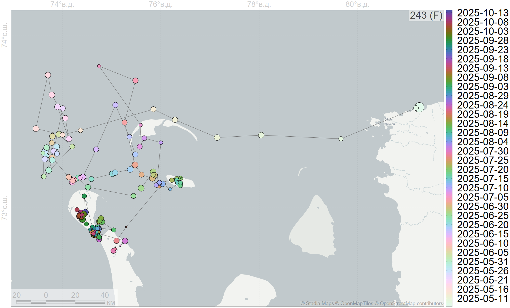Размер маркера обратнопропорционален логарифму ошибки координат</span>" width="1330" height="700" /> <p class="caption">Перемещение 243🙎. <span class='smallest'>Размер маркера обратнопропорционален логарифму ошибки координат</span></p> </div> ] ] --- name: He5c3e .toc.sidebar.left-column[ .outline[ # [О программе ](#H88047) # [Данные ](#Hb52bc) # [Результаты ](#H990ca) <span class="bullet bullet">[•](#H990ca)</span><span class="bullet bullet">[•](#Hb05fc)</span><span class="bullet bullet">[•](#He2ae2)</span><span class="bullet bullet">[•](#H95a91)</span><span class="bullet bullet">[•](#H0ca04)</span><span class="bullet bullet">[•](#H7ba77)</span><span class="bullet bullet-active">[•](#He5c3e)</span><span class="bullet mslide25m">[•](#H92c4d)</span><span class="bullet mslide26m">[•](#H0bcd8)</span><span class="bullet mslide27m">[•](#H7ccab)</span><span class="bullet mslide28m">[•](#Hec75a)</span><span class="bullet mslide29m">[•](#H9b729)</span><span class="bullet mslide30m">[•](#Hfbb51)</span><span class="bullet mslide31m">[•](#H8cb22)</span><span class="bullet mslide32m">[•](#H15bb7)</span>.fg[].bg[] ## [Суточный ход ](#H4e4c7) ## [.pass[Морской лёд] ](#H754f2) # [.pass[Обсуждение] ](#H434e6) # [Выводы ](#H4e831) ] ] .toc.mainbar.right-column.scrollable[ .header.h1.broad[ <span class="generation">Результаты</span> ] .fixprecode[ <div class="figure" style="text-align: left"> 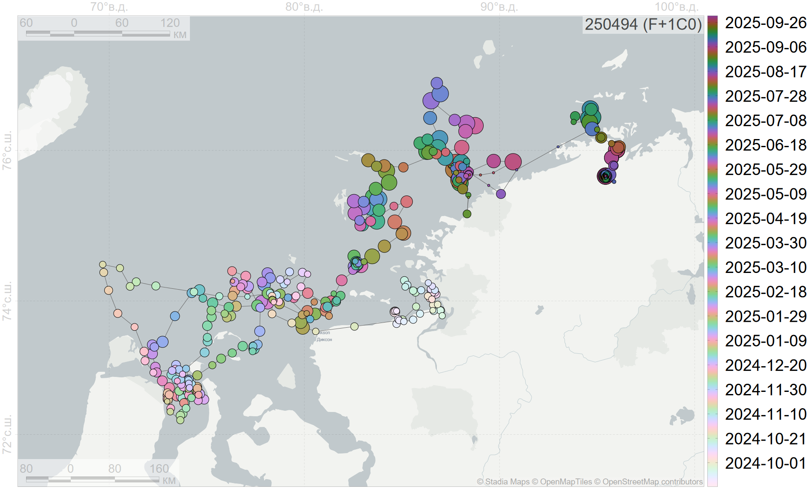Размер маркера обратнопропорционален логарифму ошибки координат</span>" width="1330" height="700" /> <p class="caption">Перемещение 494👩👦. <span class='smallest'>Размер маркера обратнопропорционален логарифму ошибки координат</span></p> </div> ] ] --- name: H92c4d .toc.sidebar.left-column[ .outline[ # [О программе ](#H88047) # [Данные ](#Hb52bc) # [Результаты ](#H990ca) <span class="bullet bullet">[•](#H990ca)</span><span class="bullet bullet">[•](#Hb05fc)</span><span class="bullet bullet">[•](#He2ae2)</span><span class="bullet bullet">[•](#H95a91)</span><span class="bullet bullet">[•](#H0ca04)</span><span class="bullet bullet">[•](#H7ba77)</span><span class="bullet bullet">[•](#He5c3e)</span><span class="bullet bullet-active">[•](#H92c4d)</span><span class="bullet mslide26m">[•](#H0bcd8)</span><span class="bullet mslide27m">[•](#H7ccab)</span><span class="bullet mslide28m">[•](#Hec75a)</span><span class="bullet mslide29m">[•](#H9b729)</span><span class="bullet mslide30m">[•](#Hfbb51)</span><span class="bullet mslide31m">[•](#H8cb22)</span><span class="bullet mslide32m">[•](#H15bb7)</span>.fg[].bg[] ## [Суточный ход ](#H4e4c7) ## [.pass[Морской лёд] ](#H754f2) # [.pass[Обсуждение] ](#H434e6) # [Выводы ](#H4e831) ] ] .toc.mainbar.right-column.scrollable[ .header.h1.broad[ <span class="generation">Результаты</span> ] .fixprecode[ <div class="figure" style="text-align: left"> 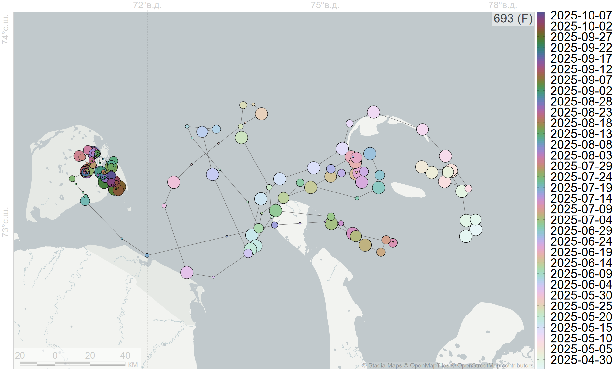Размер маркера обратнопропорционален логарифму ошибки координат</span>" width="1330" height="700" /> <p class="caption">Перемещение 693🙎. <span class='smallest'>Размер маркера обратнопропорционален логарифму ошибки координат</span></p> </div> ] ] --- name: H0bcd8 .toc.sidebar.left-column[ .outline[ # [О программе ](#H88047) # [Данные ](#Hb52bc) # [Результаты ](#H990ca) <span class="bullet bullet">[•](#H990ca)</span><span class="bullet bullet">[•](#Hb05fc)</span><span class="bullet bullet">[•](#He2ae2)</span><span class="bullet bullet">[•](#H95a91)</span><span class="bullet bullet">[•](#H0ca04)</span><span class="bullet bullet">[•](#H7ba77)</span><span class="bullet bullet">[•](#He5c3e)</span><span class="bullet bullet">[•](#H92c4d)</span><span class="bullet bullet-active">[•](#H0bcd8)</span><span class="bullet mslide27m">[•](#H7ccab)</span><span class="bullet mslide28m">[•](#Hec75a)</span><span class="bullet mslide29m">[•](#H9b729)</span><span class="bullet mslide30m">[•](#Hfbb51)</span><span class="bullet mslide31m">[•](#H8cb22)</span><span class="bullet mslide32m">[•](#H15bb7)</span>.fg[].bg[] ## [Суточный ход ](#H4e4c7) ## [.pass[Морской лёд] ](#H754f2) # [.pass[Обсуждение] ](#H434e6) # [Выводы ](#H4e831) ] ] .toc.mainbar.right-column.scrollable[ .header.h1.broad[ <span class="generation">Результаты</span> ] .fixprecode[ <div class="figure" style="text-align: left"> 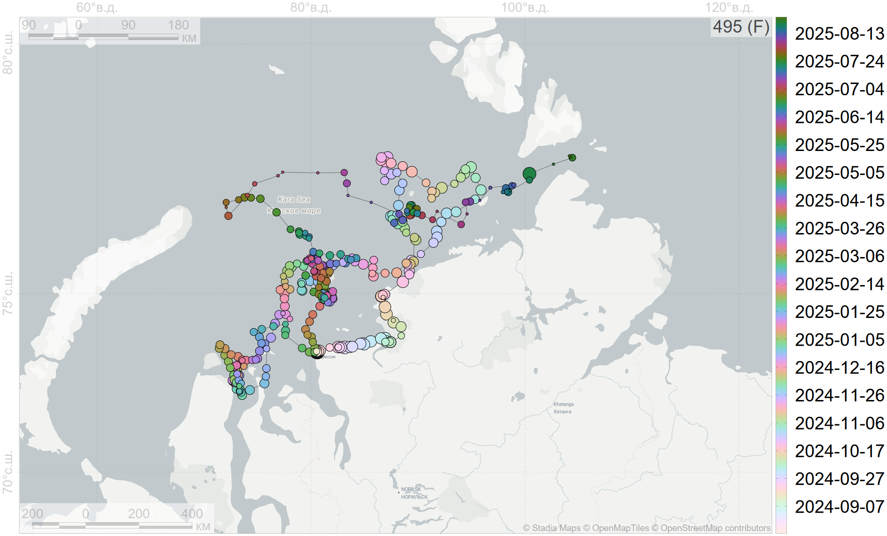Размер маркера обратнопропорционален логарифму ошибки координат</span>" width="1330" height="700" /> <p class="caption">Перемещение 495🙎. <span class='smallest'>Размер маркера обратнопропорционален логарифму ошибки координат</span></p> </div> ] ] --- name: H7ccab .toc.sidebar.left-column[ .outline[ # [О программе ](#H88047) # [Данные ](#Hb52bc) # [Результаты ](#H990ca) <span class="bullet bullet">[•](#H990ca)</span><span class="bullet bullet">[•](#Hb05fc)</span><span class="bullet bullet">[•](#He2ae2)</span><span class="bullet bullet">[•](#H95a91)</span><span class="bullet bullet">[•](#H0ca04)</span><span class="bullet bullet">[•](#H7ba77)</span><span class="bullet bullet">[•](#He5c3e)</span><span class="bullet bullet">[•](#H92c4d)</span><span class="bullet bullet">[•](#H0bcd8)</span><span class="bullet bullet-active">[•](#H7ccab)</span><span class="bullet mslide28m">[•](#Hec75a)</span><span class="bullet mslide29m">[•](#H9b729)</span><span class="bullet mslide30m">[•](#Hfbb51)</span><span class="bullet mslide31m">[•](#H8cb22)</span><span class="bullet mslide32m">[•](#H15bb7)</span>.fg[].bg[] ## [Суточный ход ](#H4e4c7) ## [.pass[Морской лёд] ](#H754f2) # [.pass[Обсуждение] ](#H434e6) # [Выводы ](#H4e831) ] ] .toc.mainbar.right-column.scrollable[ .header.h1.broad[ <span class="generation">Результаты</span> ] .fixprecode[ <div class="figure" style="text-align: left"> 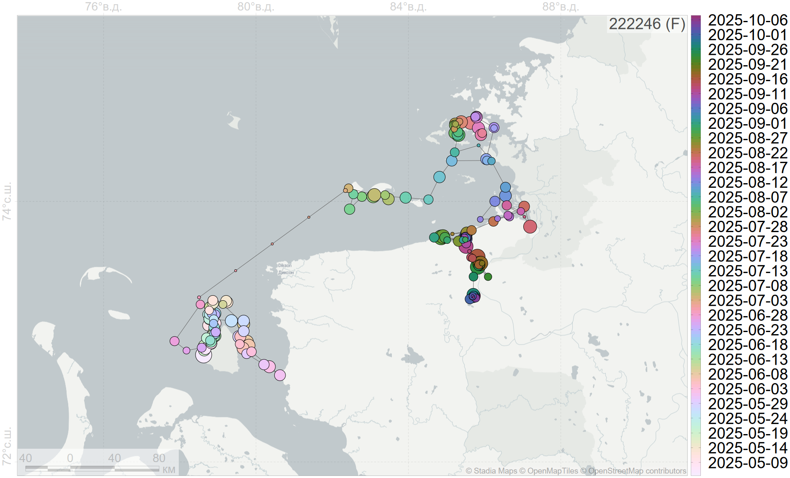Размер маркера обратнопропорционален логарифму ошибки координат</span>" width="1330" height="700" /> <p class="caption">Перемещение 246🙎. <span class='smallest'>Размер маркера обратнопропорционален логарифму ошибки координат</span></p> </div> ] ] --- name: Hec75a .toc.sidebar.left-column[ .outline[ # [О программе ](#H88047) # [Данные ](#Hb52bc) # [Результаты ](#H990ca) <span class="bullet bullet">[•](#H990ca)</span><span class="bullet bullet">[•](#Hb05fc)</span><span class="bullet bullet">[•](#He2ae2)</span><span class="bullet bullet">[•](#H95a91)</span><span class="bullet bullet">[•](#H0ca04)</span><span class="bullet bullet">[•](#H7ba77)</span><span class="bullet bullet">[•](#He5c3e)</span><span class="bullet bullet">[•](#H92c4d)</span><span class="bullet bullet">[•](#H0bcd8)</span><span class="bullet bullet">[•](#H7ccab)</span><span class="bullet bullet-active">[•](#Hec75a)</span><span class="bullet mslide29m">[•](#H9b729)</span><span class="bullet mslide30m">[•](#Hfbb51)</span><span class="bullet mslide31m">[•](#H8cb22)</span><span class="bullet mslide32m">[•](#H15bb7)</span>.fg[].bg[] ## [Суточный ход ](#H4e4c7) ## [.pass[Морской лёд] ](#H754f2) # [.pass[Обсуждение] ](#H434e6) # [Выводы ](#H4e831) ] ] .toc.mainbar.right-column.scrollable[ .header.h1.broad[ <span class="generation">Результаты</span> ] .fixprecode[ <div class="figure" style="text-align: left"> 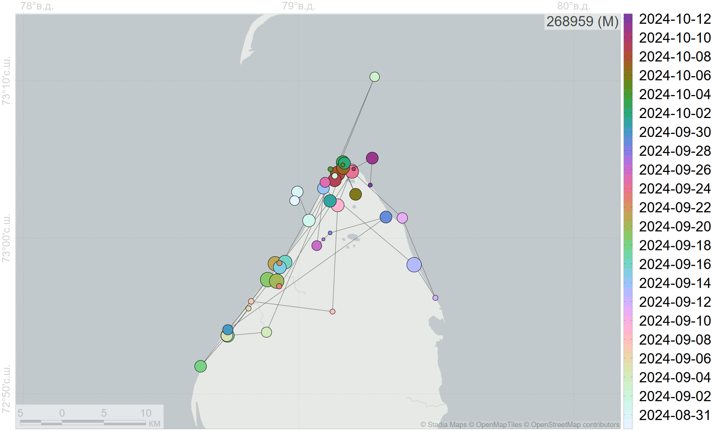Размер маркера обратнопропорционален логарифму ошибки координат</span>" width="1330" height="700" /> <p class="caption">Перемещение 959🙍♂️. <span class='smallest'>Размер маркера обратнопропорционален логарифму ошибки координат</span></p> </div> ] ] --- name: H9b729 .toc.sidebar.left-column[ .outline[ # [О программе ](#H88047) # [Данные ](#Hb52bc) # [Результаты ](#H990ca) <span class="bullet bullet">[•](#H990ca)</span><span class="bullet bullet">[•](#Hb05fc)</span><span class="bullet bullet">[•](#He2ae2)</span><span class="bullet bullet">[•](#H95a91)</span><span class="bullet bullet">[•](#H0ca04)</span><span class="bullet bullet">[•](#H7ba77)</span><span class="bullet bullet">[•](#He5c3e)</span><span class="bullet bullet">[•](#H92c4d)</span><span class="bullet bullet">[•](#H0bcd8)</span><span class="bullet bullet">[•](#H7ccab)</span><span class="bullet bullet">[•](#Hec75a)</span><span class="bullet bullet-active">[•](#H9b729)</span><span class="bullet mslide30m">[•](#Hfbb51)</span><span class="bullet mslide31m">[•](#H8cb22)</span><span class="bullet mslide32m">[•](#H15bb7)</span>.fg[].bg[] ## [Суточный ход ](#H4e4c7) ## [.pass[Морской лёд] ](#H754f2) # [.pass[Обсуждение] ](#H434e6) # [Выводы ](#H4e831) ] ] .toc.mainbar.right-column.scrollable[ .header.h1.broad[ <span class="generation">Результаты</span> ] .fixprecode[ <div class="figure" style="text-align: left"> 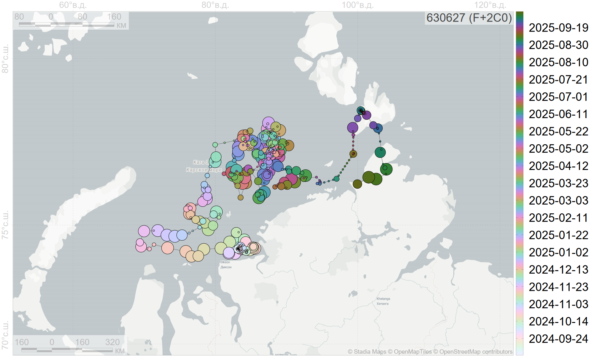Размер маркера обратнопропорционален логарифму ошибки координат</span>" width="1330" height="700" /> <p class="caption">Перемещение 627👩👧👦. <span class='smallest'>Размер маркера обратнопропорционален логарифму ошибки координат</span></p> </div> ] ] --- name: Hfbb51 .toc.sidebar.left-column[ .outline[ # [О программе ](#H88047) # [Данные ](#Hb52bc) # [Результаты ](#H990ca) <span class="bullet bullet">[•](#H990ca)</span><span class="bullet bullet">[•](#Hb05fc)</span><span class="bullet bullet">[•](#He2ae2)</span><span class="bullet bullet">[•](#H95a91)</span><span class="bullet bullet">[•](#H0ca04)</span><span class="bullet bullet">[•](#H7ba77)</span><span class="bullet bullet">[•](#He5c3e)</span><span class="bullet bullet">[•](#H92c4d)</span><span class="bullet bullet">[•](#H0bcd8)</span><span class="bullet bullet">[•](#H7ccab)</span><span class="bullet bullet">[•](#Hec75a)</span><span class="bullet bullet">[•](#H9b729)</span><span class="bullet bullet-active">[•](#Hfbb51)</span><span class="bullet mslide31m">[•](#H8cb22)</span><span class="bullet mslide32m">[•](#H15bb7)</span>.fg[].bg[] ## [Суточный ход ](#H4e4c7) ## [.pass[Морской лёд] ](#H754f2) # [.pass[Обсуждение] ](#H434e6) # [Выводы ](#H4e831) ] ] .toc.mainbar.right-column.scrollable[ .header.h1.broad[ <span class="generation">Результаты</span> ] .fixprecode[ <div class="figure" style="text-align: left"> 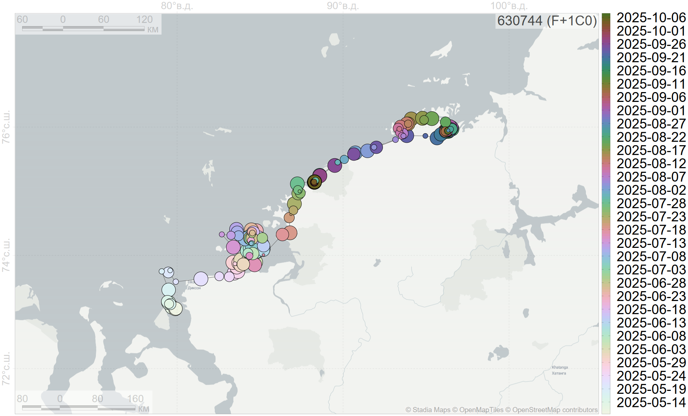Размер маркера обратнопропорционален логарифму ошибки координат</span>" width="1330" height="700" /> <p class="caption">Перемещение 744👩👦. <span class='smallest'>Размер маркера обратнопропорционален логарифму ошибки координат</span></p> </div> ] ] --- name: H8cb22 .toc.sidebar.left-column[ .outline[ # [О программе ](#H88047) # [Данные ](#Hb52bc) # [Результаты ](#H990ca) <span class="bullet bullet">[•](#H990ca)</span><span class="bullet bullet">[•](#Hb05fc)</span><span class="bullet bullet">[•](#He2ae2)</span><span class="bullet bullet">[•](#H95a91)</span><span class="bullet bullet">[•](#H0ca04)</span><span class="bullet bullet">[•](#H7ba77)</span><span class="bullet bullet">[•](#He5c3e)</span><span class="bullet bullet">[•](#H92c4d)</span><span class="bullet bullet">[•](#H0bcd8)</span><span class="bullet bullet">[•](#H7ccab)</span><span class="bullet bullet">[•](#Hec75a)</span><span class="bullet bullet">[•](#H9b729)</span><span class="bullet bullet">[•](#Hfbb51)</span><span class="bullet bullet-active">[•](#H8cb22)</span><span class="bullet mslide32m">[•](#H15bb7)</span>.fg[].bg[] ## [Суточный ход ](#H4e4c7) ## [.pass[Морской лёд] ](#H754f2) # [.pass[Обсуждение] ](#H434e6) # [Выводы ](#H4e831) ] ] .toc.mainbar.right-column.scrollable[ .header.h1.broad[ <span class="generation">Результаты</span> ] .fixprecode[ <div class="figure" style="text-align: left"> 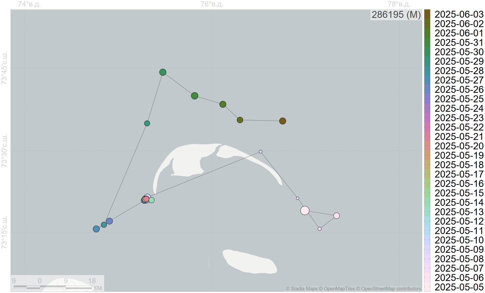Размер маркера обратнопропорционален логарифму ошибки координат</span>" width="1330" height="700" /> <p class="caption">Перемещение 195🙍♂️. <span class='smallest'>Размер маркера обратнопропорционален логарифму ошибки координат</span></p> </div> ] ] --- name: H15bb7 .toc.sidebar.left-column[ .outline[ # [О программе ](#H88047) # [Данные ](#Hb52bc) # [Результаты ](#H990ca) <span class="bullet bullet">[•](#H990ca)</span><span class="bullet bullet">[•](#Hb05fc)</span><span class="bullet bullet">[•](#He2ae2)</span><span class="bullet bullet">[•](#H95a91)</span><span class="bullet bullet">[•](#H0ca04)</span><span class="bullet bullet">[•](#H7ba77)</span><span class="bullet bullet">[•](#He5c3e)</span><span class="bullet bullet">[•](#H92c4d)</span><span class="bullet bullet">[•](#H0bcd8)</span><span class="bullet bullet">[•](#H7ccab)</span><span class="bullet bullet">[•](#Hec75a)</span><span class="bullet bullet">[•](#H9b729)</span><span class="bullet bullet">[•](#Hfbb51)</span><span class="bullet bullet">[•](#H8cb22)</span><span class="bullet bullet-active">[•](#H15bb7)</span>.fg[].bg[] ## [Суточный ход ](#H4e4c7) ## [.pass[Морской лёд] ](#H754f2) # [.pass[Обсуждение] ](#H434e6) # [Выводы ](#H4e831) ] ] .toc.mainbar.right-column.scrollable[ .header.h1.broad[ <span class="generation">Результаты</span> ] .fixprecode[ <div class="figure" style="text-align: left"> 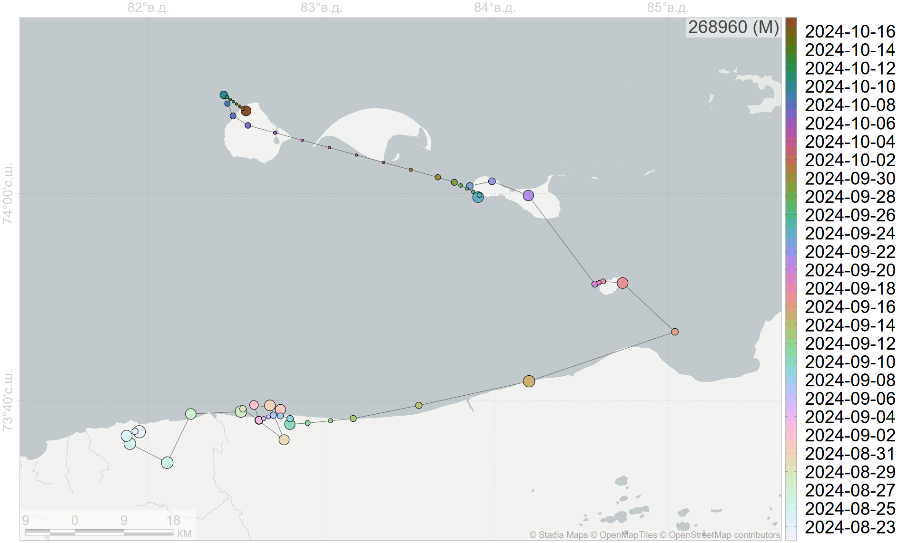Размер маркера обратнопропорционален логарифму ошибки координат</span>" width="1330" height="700" /> <p class="caption">Перемещение 960🙍♂️. <span class='smallest'>Размер маркера обратнопропорционален логарифму ошибки координат</span></p> </div> ] ] --- name: H4e4c7 .toc.sidebar.left-column[ .outline[ # [О программе ](#H88047) # [Данные ](#Hb52bc) # [Результаты ](#H990ca).fg[] ## [Суточный ход ](#H4e4c7).fg[].bg[] ### [До берега](#H133ec) ### [Рельеф](#H3c987) ## [.pass[Морской лёд] ](#H754f2) # [.pass[Обсуждение] ](#H434e6) # [Выводы ](#H4e831) ] ] .toc.mainbar.right-column.scrollable[ .header.h2.broad[ <span class="generation">Суточный ход</span> .parent[.grand[Результаты]] ] .fixprecode[ 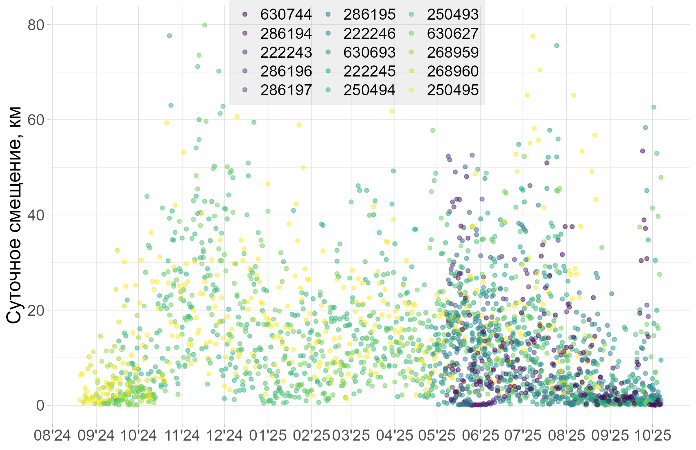 Суточное смещение в безлёдный период меньше. ] ] --- name: H133ec .toc.sidebar.left-column[ .outline[ # [О программе ](#H88047) # [Данные ](#Hb52bc) # [Результаты ](#H990ca).fg[] ## [Суточный ход ](#H4e4c7).fg[] ### [До берега](#H133ec).fg[].bg[] ### [Рельеф](#H3c987) ## [.pass[Морской лёд] ](#H754f2) # [.pass[Обсуждение] ](#H434e6) # [Выводы ](#H4e831) ] ] .toc.mainbar.right-column.scrollable[ .header.h3.broad[ <span class='generation'>Расстояние до берега</span> .parent[.grand[Суточный ход .grand[Результаты]]] ] .fixprecode[ <div class="figure" style="text-align: left"> 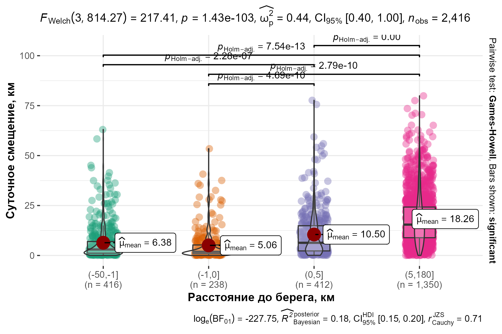 <p class="caption">Отсечки: 1 км вглубь суши, береговая линия, 5 км акватории</p> </div> .formula[ Pearson's product-moment correlation <br> `\(\rho(log(\text{daily}), log(|\text{dist2land}|))=0.44\)`, `\(p<0.001\)`. ] ] ] --- name: H3c987 .toc.sidebar.left-column[ .outline[ # [О программе ](#H88047) # [Данные ](#Hb52bc) # [Результаты ](#H990ca).fg[] ## [Суточный ход ](#H4e4c7).fg[] ### [До берега](#H133ec) ### [Рельеф](#H3c987).fg[].bg[] ## [.pass[Морской лёд] ](#H754f2) # [.pass[Обсуждение] ](#H434e6) # [Выводы ](#H4e831) ] ] .toc.mainbar.right-column.scrollable[ .header.h3.broad[ <span class='generation'>Глубины и высоты</span> .parent[.grand[Суточный ход .grand[Результаты]]] ] .fixprecode[ <div class="figure" style="text-align: left"> 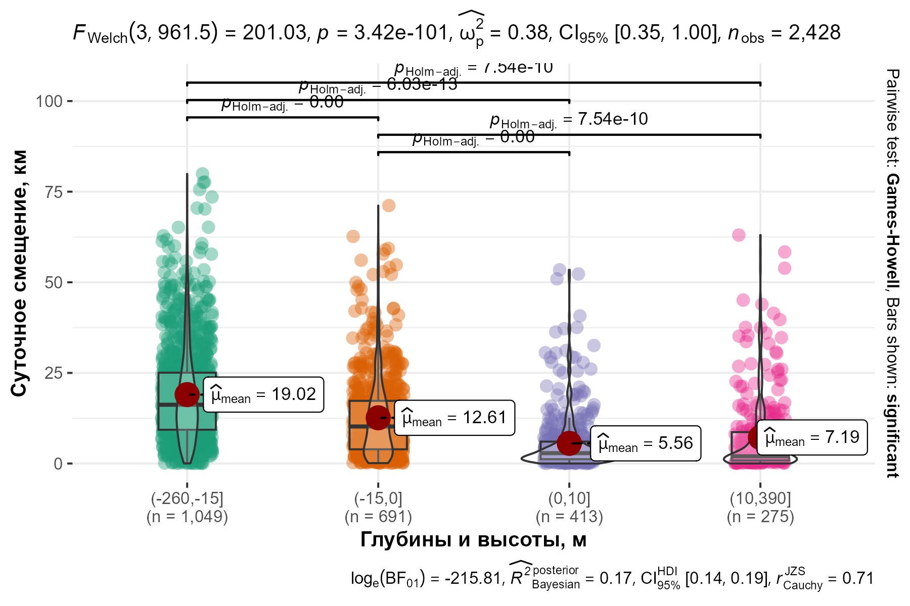 <p class="caption">Отсечки: глубина 15 м, уровень моря, высота 10 м</p> </div> .formula[ Pearson's product-moment correlation <br> `\(\rho(log(\text{daily}), \text{gebco})=-0.37\)`, `\(p<0.001\)`. ] ] ] --- name: H754f2 .toc.sidebar.left-column[ .outline[ # [О программе ](#H88047) # [Данные ](#Hb52bc) # [Результаты ](#H990ca).fg[] ## [Суточный ход ](#H4e4c7) ## [.pass[Морской лёд] ](#H754f2).fg[] ### [Ледовый сезон ](#H754f2) <span class="bullet bullet-active">[•](#H754f2)</span><span class="bullet mslide39m">[•](#H8269a)</span>.fg[].bg[] ### [Ландшафты ](#H55af0) ### [Ландш.градиент](#Hc2d26) # [.pass[Обсуждение] ](#H434e6) # [Выводы ](#H4e831) ] ] .toc.mainbar.right-column.scrollable[ .header.h3.broad[ <span class="generation">Ледовый сезон</span> .parent[.grand[.pass[Морской лёд] .grand[Результаты]]] ] .fixprecode[ 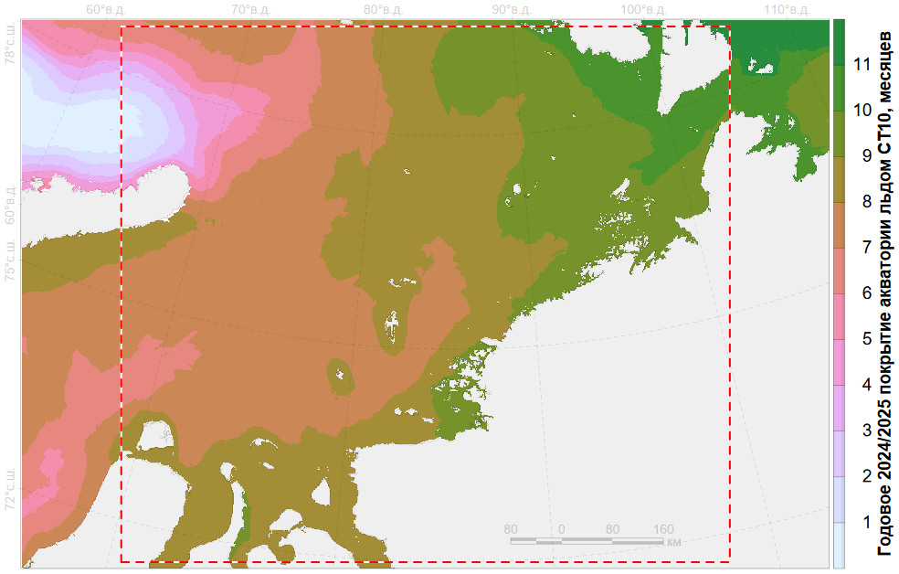 .caption[ Открытая вода больше полугода на 6.7 % .bbox[акватории] ] ] ] --- name: H8269a .toc.sidebar.left-column[ .outline[ # [О программе ](#H88047) # [Данные ](#Hb52bc) # [Результаты ](#H990ca).fg[] ## [Суточный ход ](#H4e4c7) ## [.pass[Морской лёд] ](#H754f2).fg[] ### [Ледовый сезон ](#H754f2) <span class="bullet bullet">[•](#H754f2)</span><span class="bullet bullet-active">[•](#H8269a)</span>.fg[].bg[] ### [Ландшафты ](#H55af0) ### [Ландш.градиент](#Hc2d26) # [.pass[Обсуждение] ](#H434e6) # [Выводы ](#H4e831) ] ] .toc.mainbar.right-column.scrollable[ .header.h3.broad[ <span class="generation">Ледовый сезон</span> .parent[.grand[.pass[Морской лёд] .grand[Результаты]]] ] .fixprecode[ 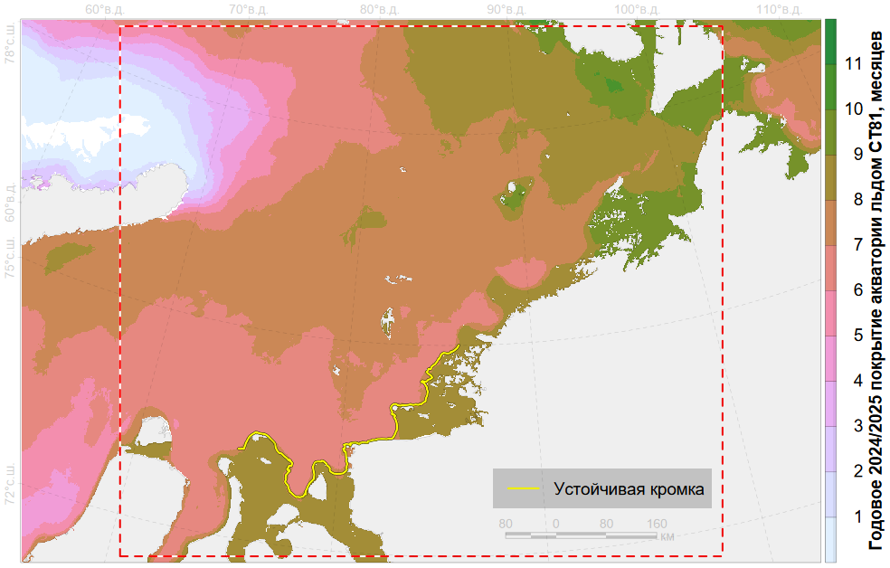 .caption[ Около 11 % .bbox[акватории] меньше полугода покрыто cплоченным льдом. ] ] ] ??? Выражена зона припайного льда. --- name: H55af0 .toc.sidebar.left-column[ .outline[ # [О программе ](#H88047) # [Данные ](#Hb52bc) # [Результаты ](#H990ca).fg[] ## [Суточный ход ](#H4e4c7) ## [.pass[Морской лёд] ](#H754f2).fg[] ### [Ледовый сезон ](#H754f2) ### [Ландшафты ](#H55af0) <span class="bullet bullet-active">[•](#H55af0)</span><span class="bullet mslide42m">[•](#H5afae)</span>.fg[].bg[] ### [Ландш.градиент](#Hc2d26) # [.pass[Обсуждение] ](#H434e6) # [Выводы ](#H4e831) ] ] .toc.mainbar.right-column.scrollable[ .header.h3.broad[ <span class="generation">Ландшафты</span> .parent[.grand[.pass[Морской лёд] .grand[Результаты]]] ] .fixprecode[ <div class="figure" style="text-align: left"> 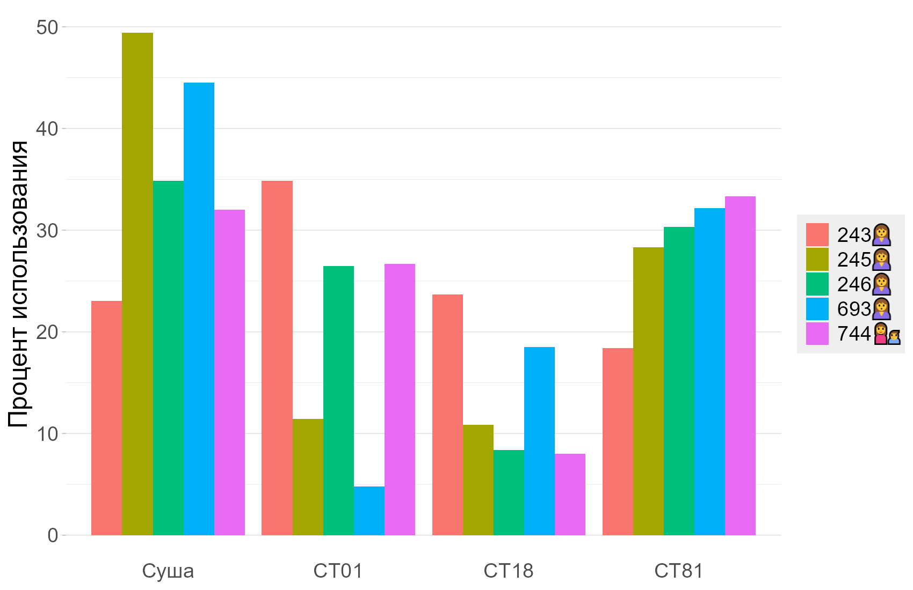 <p class="caption">Предпочитаемые категории льда и суши</p> </div> ] ] --- name: H5afae .toc.sidebar.left-column[ .outline[ # [О программе ](#H88047) # [Данные ](#Hb52bc) # [Результаты ](#H990ca).fg[] ## [Суточный ход ](#H4e4c7) ## [.pass[Морской лёд] ](#H754f2).fg[] ### [Ледовый сезон ](#H754f2) ### [Ландшафты ](#H55af0) <span class="bullet bullet">[•](#H55af0)</span><span class="bullet bullet-active">[•](#H5afae)</span>.fg[].bg[] ### [Ландш.градиент](#Hc2d26) # [.pass[Обсуждение] ](#H434e6) # [Выводы ](#H4e831) ] ] .toc.mainbar.right-column.scrollable[ .header.h3.broad[ <span class="generation">Ландшафты</span> .parent[.grand[.pass[Морской лёд] .grand[Результаты]]] ] .fixprecode[ <div class="figure" style="text-align: left"> 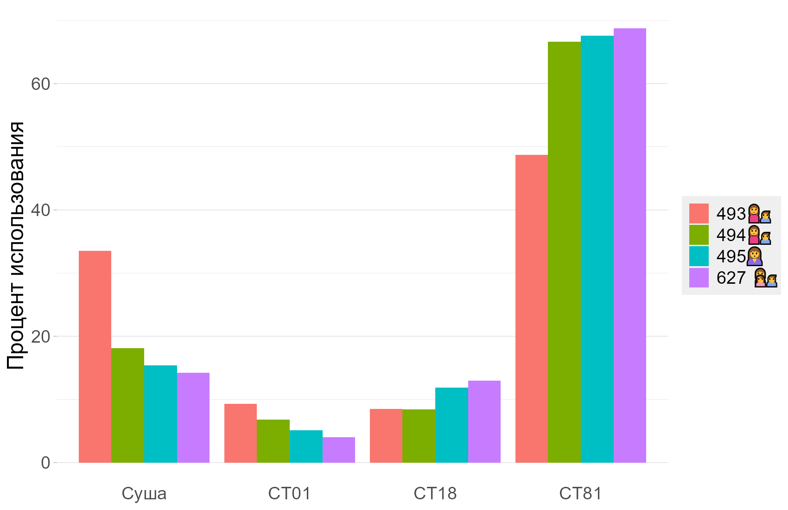 <p class="caption">Предпочитаемые категории льда и суши</p> </div> ] ] --- name: Hc2d26 .toc.sidebar.left-column[ .outline[ # [О программе ](#H88047) # [Данные ](#Hb52bc) # [Результаты ](#H990ca).fg[] ## [Суточный ход ](#H4e4c7) ## [.pass[Морской лёд] ](#H754f2).fg[] ### [Ледовый сезон ](#H754f2) ### [Ландшафты ](#H55af0) ### [Ландш.градиент](#Hc2d26).fg[].bg[] # [.pass[Обсуждение] ](#H434e6) # [Выводы ](#H4e831) ] ] .toc.mainbar.right-column.scrollable[ .header.h3.broad[ <span class='generation'>Ландшафтный градиент</span> .parent[.grand[.pass[Морской лёд] .grand[Результаты]]] ] .fixprecode[ <img src="assets/icetype-between-CT81-edge18.png" width="1330" height="700" style="display: block; margin: auto auto auto 0;" /> ] ] --- name: H434e6 .toc.sidebar.left-column[ .outline[ # [О программе ](#H88047) # [Данные ](#Hb52bc) # [Результаты ](#H990ca) # [.pass[Обсуждение] ](#H434e6).fg[] ## [Фенология ](#H434e6).fg[].bg[] ## [Отловы на Ямале](#H1cfe8) ## [Генетика](#H66d22) ## [Моделирование](#maxent) # [Выводы ](#H4e831) ] ] .toc.mainbar.right-column.scrollable[ .header.h2.broad[ <span class="generation">Фенология</span> .parent[.grand[.pass[Обсуждение]]] ] .fixprecode[ <img src="assets/hutuda1.png" width="1330" height="700" style="display: block; margin: auto auto auto 0;" /> Перемещение самки белого медведя <span class="cite hovertext" data-hover="Перемещение самки белого медведя в Карском море в период летнего таяния льда"><a name=cite-Rozhnov2017_hutuda_ru></a>([Рожнов и др., 2017](#bib))</span> в 2012 г., наложенное на фенологическую карту вскрытия ледового покрова. Цветовая легенда единая для участков траектории и для фенокарты. .pulling[ .pull-left-70[ ] .pull-right-30[ ] ] ] ] --- name: H1cfe8 .toc.sidebar.left-column[ .outline[ # [О программе ](#H88047) # [Данные ](#Hb52bc) # [Результаты ](#H990ca) # [.pass[Обсуждение] ](#H434e6).fg[] ## [Фенология ](#H434e6) ## [Отловы на Ямале](#H1cfe8).fg[].bg[] ## [Генетика](#H66d22) ## [Моделирование](#maxent) # [Выводы ](#H4e831) ] ] .toc.mainbar.right-column.scrollable[ .header.h2.broad[ <span class='generation'>Участок обитания</span> .parent[.grand[.pass[Обсуждение]]] ] .fixprecode[ <div class="figure" style="text-align: left"> 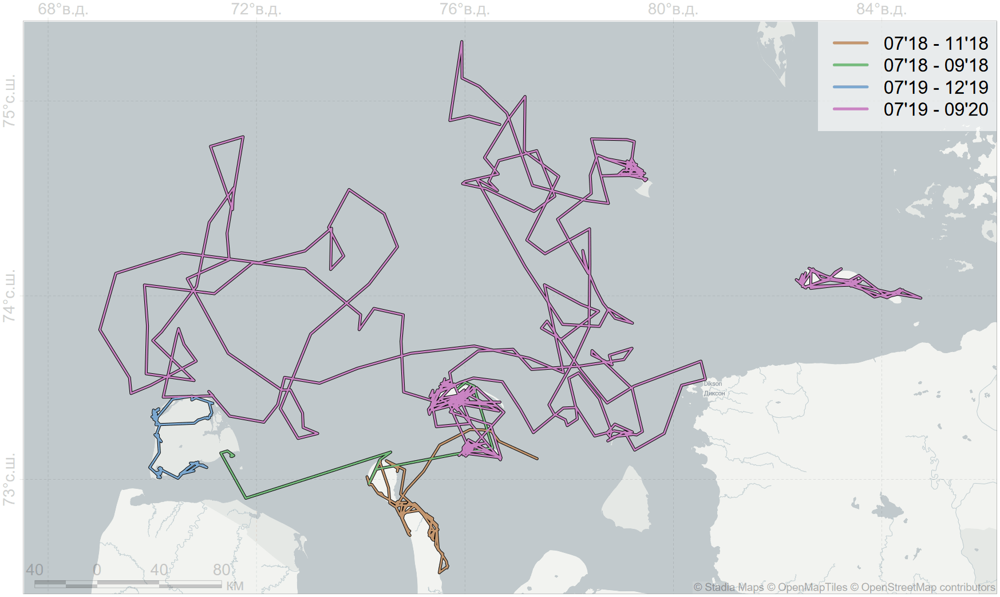 <p class="caption">Перемещения белых медведей, отловленных на Ямале</p> </div> ] ] --- name: H66d22 .toc.sidebar.left-column[ .outline[ # [О программе ](#H88047) # [Данные ](#Hb52bc) # [Результаты ](#H990ca) # [.pass[Обсуждение] ](#H434e6).fg[] ## [Фенология ](#H434e6) ## [Отловы на Ямале](#H1cfe8) ## [Генетика](#H66d22).fg[].bg[] ## [Моделирование](#maxent) # [Выводы ](#H4e831) ] ] .toc.mainbar.right-column.scrollable[ .header.h2.broad[ <span class='generation'>Популяционная структура</span> .parent[.grand[.pass[Обсуждение]]] ] .fixprecode[ .pulling[ .pull-left-50[ <div class="figure" style="text-align: left"> <img src="assets/sorokin-suggested.png" alt="Предполагаемое разбиение по группировкам" width="1330" height="700" /> <p class="caption">Предполагаемое разбиение по группировкам</p> </div> ] .pull-right-50[ <div class="figure" style="text-align: left"> 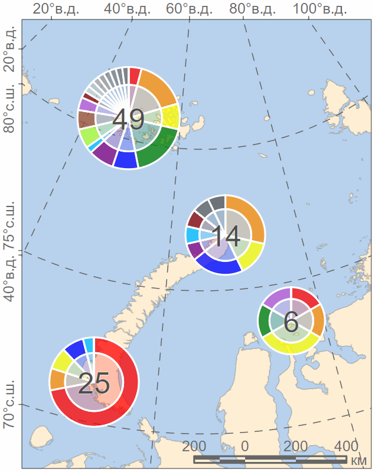 <p class="caption">Распределение с выявленными гаплотипами</p> </div> ] ] Подробности в работе <span class="cite hovertext" data-hover="Генетическая структура популяции белого медведя (Ursus maritimus) в морях российской Арктики"><a name=cite-Sorokin2023></a>([Сорокин и др., 2023](#bib))</span>. ] ] --- name: maxent .toc.sidebar.left-column[ .outline[ # [О программе ](#H88047) # [Данные ](#Hb52bc) # [Результаты ](#H990ca) # [.pass[Обсуждение] ](#H434e6).fg[] ## [Фенология ](#H434e6) ## [Отловы на Ямале](#H1cfe8) ## [Генетика](#H66d22) ## [Моделирование](#maxent).fg[].bg[] # [Выводы ](#H4e831) ] ] .toc.mainbar.right-column.scrollable[ .header.h2.broad[ <span class="generation">Моделирование</span> .parent[.grand[.pass[Обсуждение]]] ] .fixprecode[ Использование данных биотелеметрии для построения региональных моделей использования местообитаний. 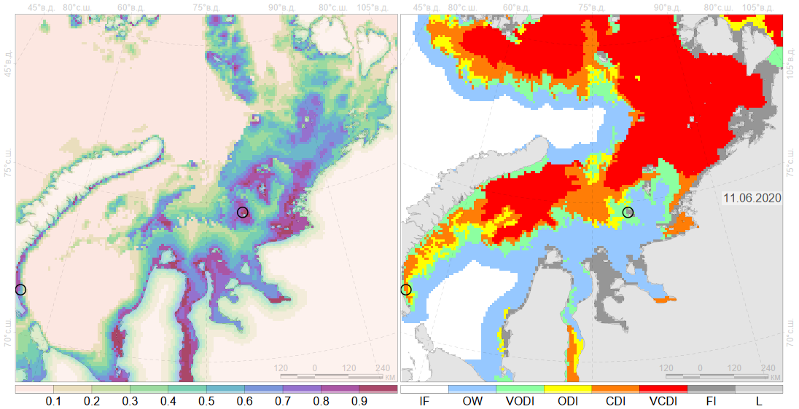 ] ] --- name: H4e831 .toc.sidebar.left-column[ .outline[ # [О программе ](#H88047) # [Данные ](#Hb52bc) # [Результаты ](#H990ca) # [.pass[Обсуждение] ](#H434e6) # [Выводы ](#H4e831).fg[].bg[] ] ] .toc.mainbar.right-column.scrollable[ .header.h1.broad[ <span class="generation">Выводы</span> ] .fixprecode[ + Суточное смещение меньше в безлёдный период. + Наименьшее суточное смещение в километровой полосе береговой линии. Суточное смещение увеличивается при удалении 5 км и больше от берега + Наименьшее суточное смещение в береговой зоне с высотами до 10 м, что, видимо, связано с отдыхом животных. На высотах до 250 м суточное смещение увеличивается, вероятно, из-за наблагоприятности ландшафта. На глубинах более 15 метров высокое значение суточного смещения может свидетельствовать о поисковой стратегии животных. + За период более 11 месяцев суточное смещение одиночной самки выше суточного смещения самок с детенышами. Достоверность такого отличия может быть принята по уровню 0.05. + Освоение акваторий в 2024-2025 сходно с участками самок в 2018-2020, отловленных на Ямале в 2018 и 2019 гг. + Подтверждается генетическая близость «таймырских» и «ямальских» белых медведей <span class="cite hovertext" data-hover="Генетическая структура популяции белого медведя (Ursus maritimus) в морях российской Арктики">([Сорокин и др., 2023](#bib))</span>. ] ] --- name: beforefinalizing .toc.sidebar.left-column[ .outline[ # [О программе ](#H88047) # [Данные ](#Hb52bc) # [Результаты ](#H990ca) # [.pass[Обсуждение] ](#H434e6) # [Выводы ](#H4e831) ] ] .toc.mainbar.right-column.scrollable[ .pulling[ .pull-left-55[ ### Благодарности + Роснефть + «РН-Ванкорн» + Экипажи вертолётов UTair + Заповедник «Большой Арктический» + Администрация п.г.т. Дикcон ] .pull-right-45[ .font65[ ### .small[Исполнитель] + ИПЭЭ РАН ### .small[Разрешительные документы] Разрешения Росприроднадзора на добывание объектов животного мира, занесенных в Красную книгу РФ: № 013 от 06.03.2024 и № 002 от 04.03.2024, № Р027-00113-77/01894740 от 20.02.2025 и № Р074-00113-77/01894667 от 20.02.2025. ### .small[Этические стандарты] + В соответствии с протоколами № 37 от 25 мая 2020 г. и № 37а от 19 марта 2024 г. Комитета по этике ИПЭЭ РАН ] .font50[ ### .smallest[Обеспечение данных в п.г.т. Диксон] + Анна Быкова + Борис Соловьёв + Дарья Кузнецова + Полина Ильина + Иван Котлов + Хосе Антонио Фернандес-Бланко ] ] ] ] --- name: bib class: notable .notfootnote.small.scrollable.bibliography[ .fixprecode[ <div class="backtoshow"><a href="javascript:window.history.back();">↩</a></div> <a name=bib-Argos-filter></a>[Freitas, C., C. Lydersen, M. A. Fedak, and K. M. Kovacs](#bib) (2008). "A simple new algorithm to filter marine mammal Argos locations". In: _Marine Mammal Science_ 24.3, pp. 315-325. DOI: [10.1111/j.1748-7692.2007.00180.x](https://doi.org/10.1111%2Fj.1748-7692.2007.00180.x). <a name=bib-GEBCO_2025></a>[GEBCO Bathymetric Compilation Group](#bib) (2025). _The GEBCO_2025 Grid - a continuous terrain model for oceans and land at 15 arc-second intervals_. En. DOI: [10.5285/37C52E96-24EA-67CE-E063-7086ABC05F29](https://doi.org/10.5285%2F37C52E96-24EA-67CE-E063-7086ABC05F29). URL: [https://www.gebco.net/data-products-gridded-bathymetry-data/gebco2025-grid](https://www.gebco.net/data-products-gridded-bathymetry-data/gebco2025-grid) (visited on Oct. 06, 2025). <a name=bib-Jonsen2019></a>[Jonsen, I. D., C. R. McMahon, T. A. Patterson, M. Auger-Méthé, R. G. Harcourt, M. A. Hindell, and S. Bestley](#bib) (2019). "Movement responses to environment: fast inference of variation among southern elephant seals with a mixed effects model". In: _Ecology_ 100, p. e02566. DOI: [10.1002/ecy.2566](https://doi.org/10.1002%2Fecy.2566). <a name=bib-Jonsen2020></a>[Jonsen, I. D., T. A. Patterson, D. P. Costa, P. D. Doherty, B. J. Godley, W. J. Grecian, C. Guinet, X. Hoenner, S. S. Kienle, P. W. Robinson, S. C. Votier, S. Whiting, M. J. Witt, M. A. Hindell, R. G. Harcourt, and C. R. McMahon](#bib) (2020). "A continuous-time state-space model for rapid quality-control of Argos locations from animal-borne tags". In: _Movement Ecology_ 8, p. 31. DOI: [10.1186/s40462-020-00217-7](https://doi.org/10.1186%2Fs40462-020-00217-7). <a name=bib-OpenStreetMapData></a>[Topf, J. and C. Hormann](#bib) (2025). _Data Derived from OpenStreetMap for Download_. Under the Open Database License "ODbL" by the OpenStreetMap Foundation. Large simplified polygons not split. Updated 2025-02-14T11:51. URL: [https://osmdata.openstreetmap.de/data/land-polygons.html](https://osmdata.openstreetmap.de/data/land-polygons.html) (visited on Feb. 14, 2025). <a name=bib-USNIC_MIZ></a>[US NIC](#bib) (2022). _Daily Arctic Marginal Ice Zone (MIZ) and Overlay Shapefile_. URL: [https://usicecenter.gov/Products/ArcticData](https://usicecenter.gov/Products/ArcticData) (visited on Apr. 05, 2022). <a name=bib-Rozhnov2017_hutuda_ru></a>[Рожнов, В., Н. Платонов, С. Найденко, И. Мордвинцев, and Е. Иванов](#bib) (2017). "Перемещение самки белого медведя в Карском море в период летнего таяния льда". In: _Доклады Академии наук_, pp. 359-363. DOI: [10.7868/S0869565217030276](https://doi.org/10.7868%2FS0869565217030276). <a name=bib-Sorokin2023></a>[Сорокин, П., Е. Звычайная, Е. Иванов, И. Мизин, И. Мордвинцев, Н. Платонов, А. Исаченко, Р. Лазарева, and В. Рожнов](#bib) (2023). "Генетическая структура популяции белого медведя (_Ursus maritimus_) в морях российской Арктики". In: _Генетика_ 59.12, p. 1393–1406. DOI: [10.31857/S0016675823120123](https://doi.org/10.31857%2FS0016675823120123). ] ] --- name: endofslideshow class: right bottom notable blackout .endofslideshow[]